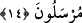

Antakya, Ammûriyye, Kostantîniyye ve Yemen’in Zafâr şehridir.”[117] Zafâr, Yemen’de
San’â yakınlarında bir beldedir. “ denilen ve göze benzetilen siyahlı beyazlı inci
bu beldeye nisbet edilir.”
Antakya hristiyanların patriklerinin bulunduğu dört şehirden biridir. Bu şehirler
Antakya, Kudüs, İskenderiyye ve Rumiyye (Roma)’dir. Bunlardan sonra Konstantîniyye
gelir.
Harîdetü’l-acâib’de der ki: “Büyük Roma, büyük bir şehirdir. İçinde üç yüz arşın
uzunluğunda büyük bir kilise vardır. Kilisenin direkleri kalıp döküm ve bakırdandır.
Ayrıca direkler sarı bakırla kaplanmıştır. Yine burada Beytü’l-makdis şeklinde yapılmış
bir kilise daha vardır. Bu şehirde bin hamam ve bin otel/han vardır. Roma özellikleri ve
güzellikleri anlatılamayacak kadar büyük bir şehirdir. Roma-Frenklerin Fransa şehri
gibi-onların payitahtı, idârî ve dînî merkezleridir. Roma’nın fethedilmesi kıyâmet
alâmetlerindendir.
14. İşte o zaman biz, onlara iki elçi göndermiştik. Onları yalanladılar. Bunun
üzerine üçüncü bir elçi gönderdik. Onlar: Biz size gönderilmiş Allah elçileriyiz!
dediler.
“İşte o zaman biz, onlara” Yahya ve Yunus adında “iki elçi göndermiştik.” Yâni
şehir halkına iki elçi, yani Yahyâ ve Yûnus’u gönderdiğimiz vakit “Onları
yalanladılar.” Yâni İbn Abbâs (r.a.)’ın dediği gibi ve aşağıda geleceği üzere o iki elçi
onlara vardılar, onları hakka dâvet ettiler. Onlar ise hiç gecikmeden ve düşünmeden
risâlet/peygamberlik hususunda o ikisini yalanladılar, onları dövdüler ve hapsettiler.
Elçilerin gönderilmesi Allah Teâlâ’nın emriyle olduğu için gönderme işi Allah’a
nisbet edilmiş, böylece elçiler Allah’ın elçileri olmuştur. Şu fıkhî mesele de bunu te’yid
eder: Müvekkilin kendisine ‘Kendi görüşüne göre hareket et’ demek suretiyle
müvekkilin izniyle vekil olan kimsenin vekil tayin ettiği kimse, vekilin değil müvekkilin
vekili olur. İlk vekilin kendisini azletmesiyle azlolunmaz. Esas müvekkilin kendisini
azlettiği zaman azlolunur.
“Bunun üzerine” Şem’ûn es-Safâ adında “üçüncü bir elçi gönderdik.” O iki elçiyi
onunla takviye ettik. Burada mef ‘ûlün (iki elçi) hazfedilmesi, kendisinden önceki
ifâdeler ona delâlet ettiği içindir. Bir de burada maksadtakviye için gönderilen üçüncü
elçiyi (Şem’ûn’u) zikretmek ve kendisiyle hakkın aziz, bâtılın zelil olduğu elçinin latîf
tedbirini (başvurduğu çareyi) beyan etmektir.
Yağmur yeri keçe gibi yapıp sertleştirdiği zaman “ denilir. “